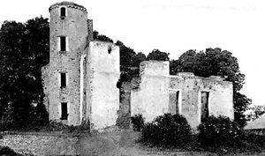
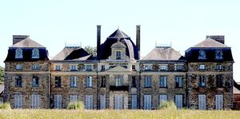
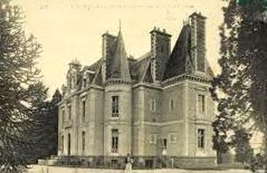
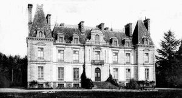
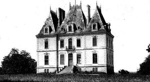

Recensement Jean-Claude Truffet
| Département | 35 — Ille-et-Vilaine |
| Canton | Bruz |
| Commune | Bruz |
| Type d'édifice | Château |
| Période d'origine | XV-XVII-XVIII |
| Coordonnées GPS | 48° 01' 29" Nord 1° 44' 45" Ouest |





Trois châteaux dans cet article ; les Loges, Cice, les Ormeaux. Les LOGES, relevait de la juridiction des Régaires de l'évêché et appartenait aux Bréhart en 1427. Puis il fut la propriété des Rallier, sieurs de Pierrefitte en 1655 et des Michau, sieurs de Montaran, de 1667 à 1714 . Ce sont ces derniers qui réédifièrent le manoir d'origine en 1680 et qui y joignirent en 1691 une chapelle et une fuie octogonale à toit plat surmonté d'un clocheton. L'ancien manoir s'élevait entre la chapelle et la fuie. En 1767, le château fut acheté par les Du Boisbaudry, qui le revendirent la même année aux Léon des Ormeaux. Suite à l'émigration de ses propriétaires pendant la Révolution, le domaine des Loges fit partie des Biens Nationaux. En 1808, M. Joseph Drouet de Montgermont, élu maire de Bruz, s'installa au château des Loges où il vécut jusqu'à son décès en 1823. Il fut acheté par M. Gourdon vers 1925 et resta dans la propriété de sa famille jusqu'à la fin des années 1960. On accède aujourd'hui au logis, construit en 1871, par deux allées nobles. L'élévation régulière et symétrique, le plan ternaire ainsi que la sobriété du vocabulaire architectural sont caractéristiques de la fin du XIXe siècle. La façade Est s'ouvre sur la cour, autour de laquelle sont disposés une chapelle au sud, et un jardin d'hiver au nord. La façade ouest donne sur le parc. Le château se compose de trois pavillons : un pavillon central à trois travées flanqué de deux pavillons latéraux à une travée. Le rez-de-chaussée est surélevé et surmonté d'un étage carré et d'un comble. Le soubassement est en granite, le reste du bâtiment en calcaire, le tout en petit appareil régulier avec des chaînes d'angle en harpe. Sur la façade Est, les encadrements des ouvertures sont légèrement cintrés et sobrement ornés. Les lucarnes latérales sont coiffées d'un fronton triangulaire, la lucarne centrale d'un fronton cintré.
CICE, le château de Cicé a été construit au XVIIe siècle. Le Château de Cicé est en ruine, aujourdhui. On peut encore admirer la chapelle Saint-Charles-Borromé et ses deux fermes, Au château de Cicé s'établit la famille Champion qui compte plusieurs éminents personnages. ORMEAUX, son seigneur châtelain est l'évêque de Rennes. A l'époque de la Révolution, Bruz connaît les troubles liés à la chouannerie, le château et le bois de Cicé étant devenus des repaires. De nombreux manoirs et maisons nobles ont été recensés dans la commune, dont un attesté au XVe siècle, quatre au XVIe siècle et treize au XVIIe siècle. Certains ont disparu, mais on peut encore voir celui du Manoir Saint-Armel daté des XVe et XVIIe siècles, bien conservé, Carcé et la Haye de Cicé du XVIe siècle, et entre autres la Houssais, Pierrefitte, la Droulinais, la Haye de Pan et la Louvière du XVIIe siècle. Cette abondance témoigne d'une période de prospérité entre le XVe et le XVIIe siècle, mais les plus anciennes fermes conservées ne datent que de la fin du XVIe siècle et du début du XVIIe siècle. Auparavant, on ne devait trouver dans la campagne que des habitations construites en motte de gazon et en bois.Le château des Ormeaux est une construction de la deuxième moitié du XIXe siècle, vers 1860 par la famille Léon des Ormeaux. Il remplace l'ancien manoir de la Bihardais qui appartenait au XVe siècle aux Baudoin. Il est construit dans un style néo-XVIIe siècle (balustrade, imposte, fronton) et a un volume de toit à la Louis XIII. C'est près de ce château que les allemands avaient entreposés un dépôt de munitions, objectif du bombardement de 1944. Le château possède un beau pavillon central avec une horloge et un lanternon. Plan massé comportant un rez-de-chaussée, un étage carré et un étage de comble.
Loges; les Du Boisbaudry, Ormeaux; famille Champion
"
Trois châteaux à Bruz; les Loges grav-5, Cice grav-1-2, les Ormeaux grav-3-4. Cicé GPS : 48° 01' 29" Nord 1° 44' 45" Ouest